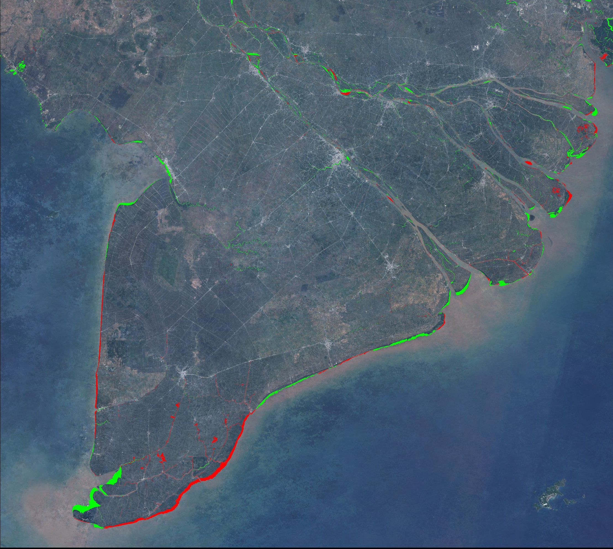
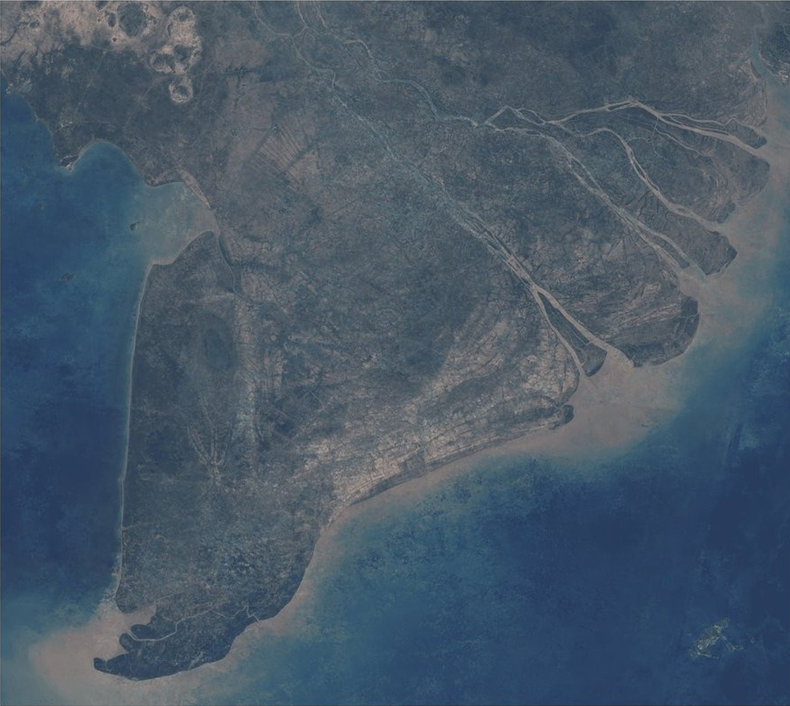
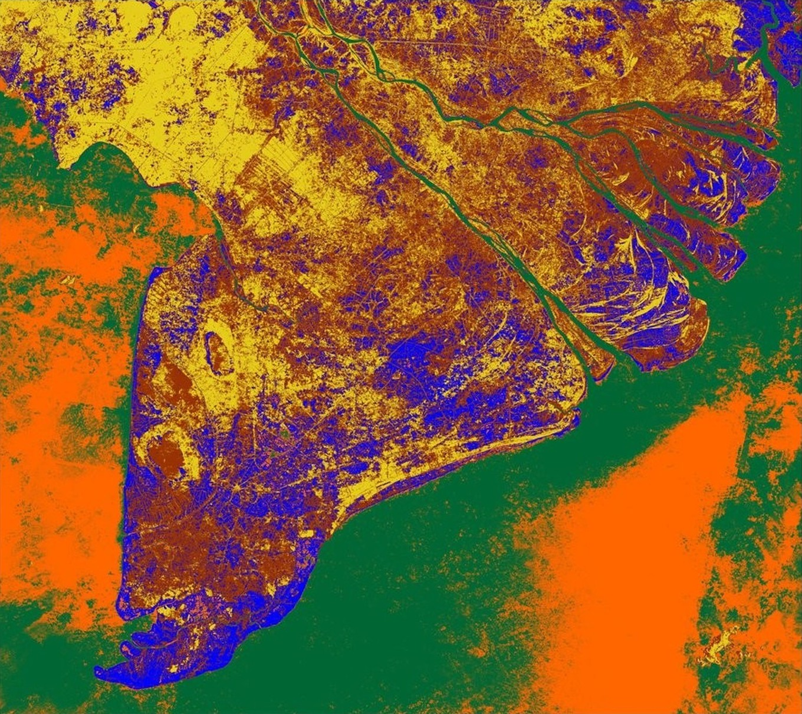
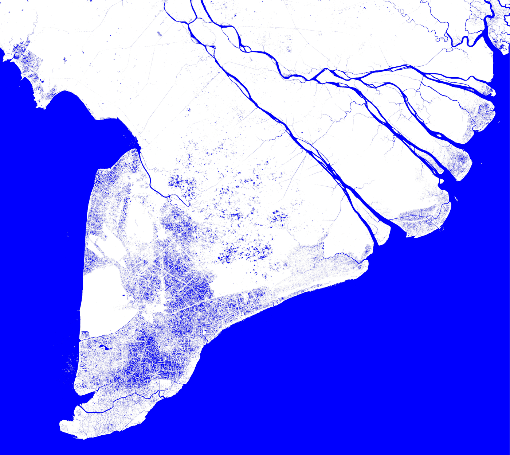
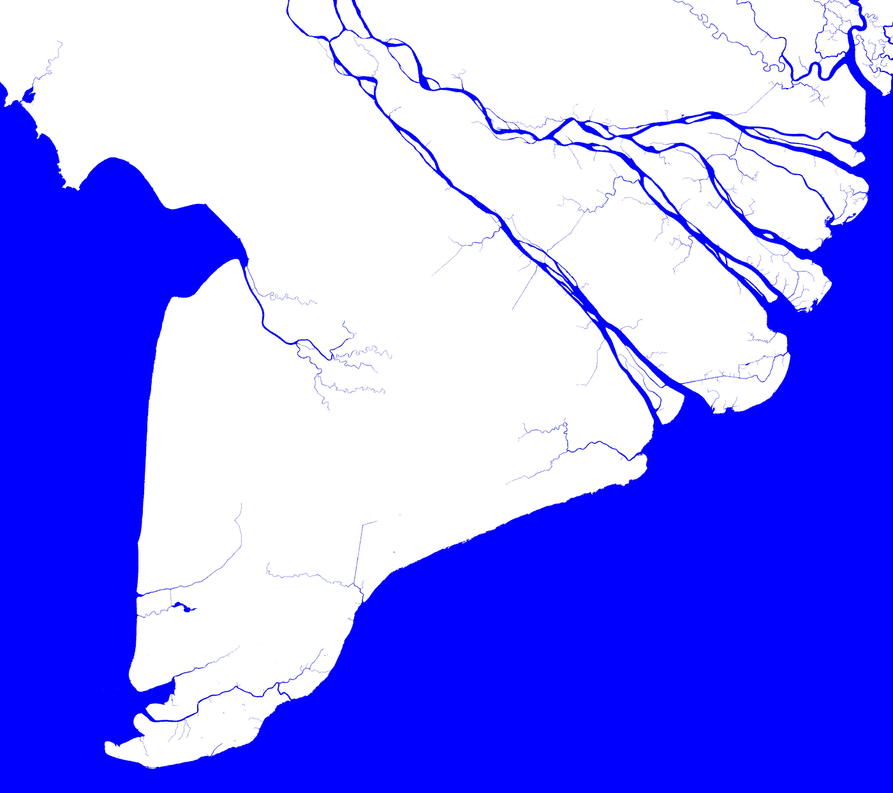
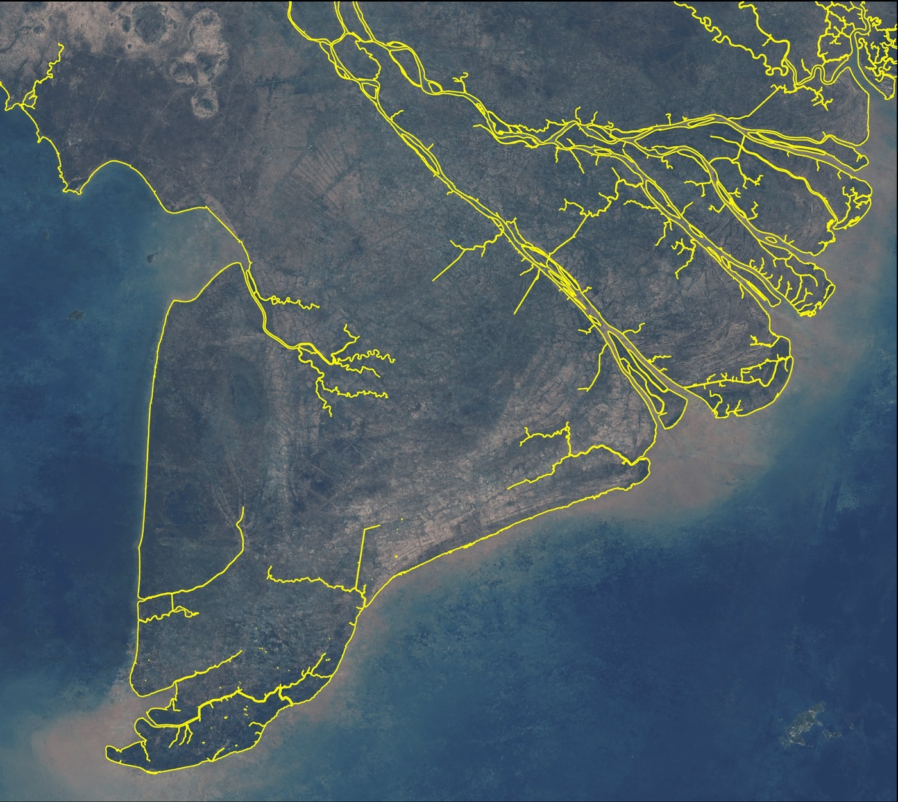
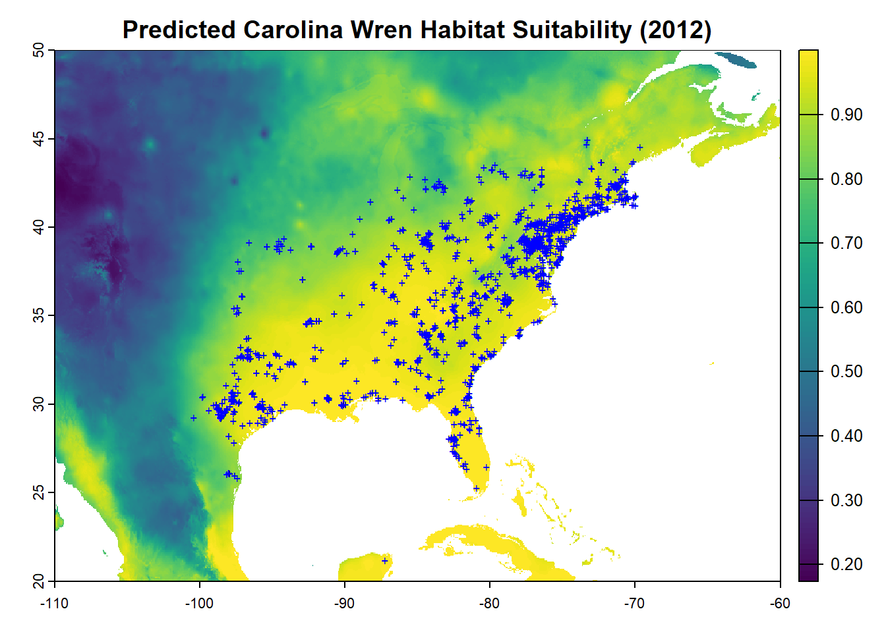
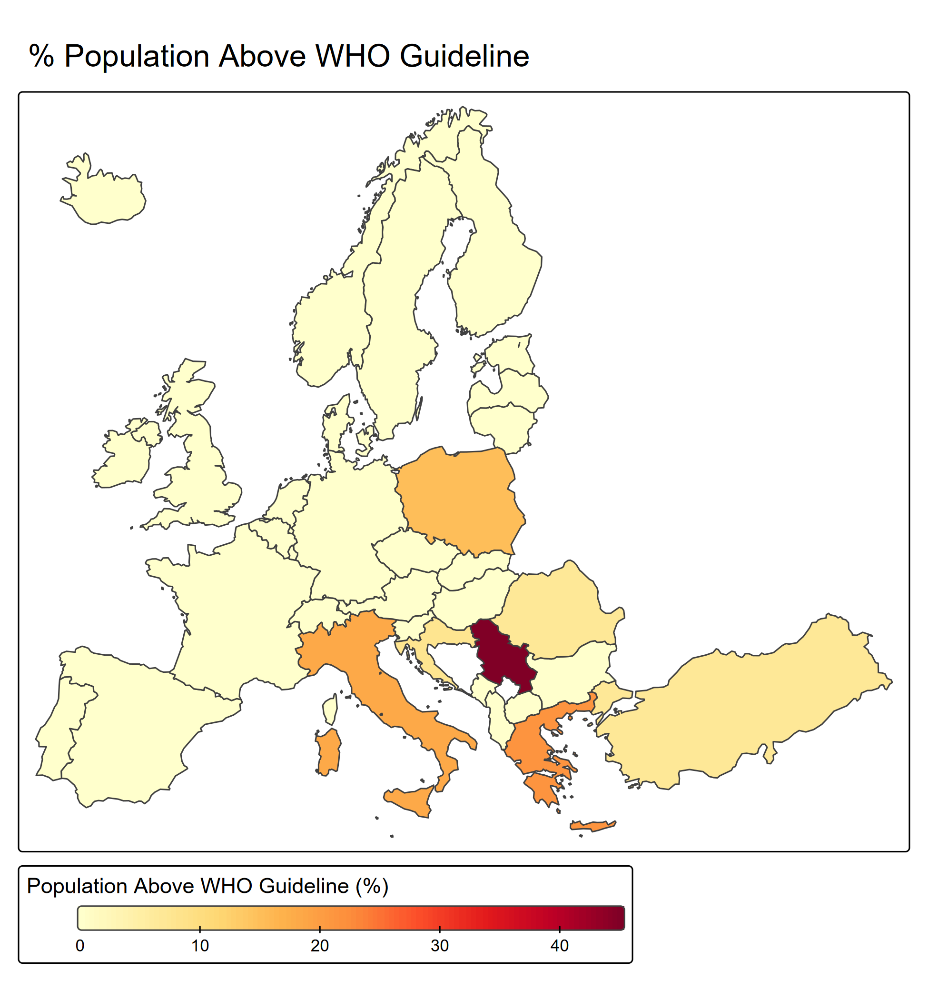

Coastline Change Analysis, Mekong Delta
Using 36 years of Landsat satellite imagery in Google Earth Engine, I mapped how Vietnam's Mekong Delta coastline has shifted, finding a net loss of about 78 square kilometers of land, similar to independent estimates from local researchers. The erosion tracks closely with a measured decline in river sediment, likely a downstream consequence of upstream dam construction.






Species Distribution Model, Carolina Wren
I built a predictive habitat model for the Carolina wren using public species-sighting data and climate variables in R, then tested it against a decade of independent bird population data. The model predicted habitat suitability well, but the follow-up test revealed a limit: it tracked shifting temperature patterns more closely than actual population change, a reminder that climate alone doesn't fully explain how adaptable species respond.

Population Exposure to PM2.5, Europe
I mapped fine particulate air pollution exposure across roughly 1,300 regions in Europe, combining satellite pollution data with population data to see who is actually breathing unsafe air. The pollution clustered strongly by geography, with the Balkans and northern Italy standing out, but statistically, population density barely mattered, pointing instead to industrial activity and cross-border pollution as the real drivers.